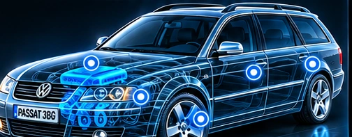

ENGINEERED
TO EXPLORE.
A Passat 3BG digitális műszaki központja. Ismerd meg a rendszereket, keresd az alkatrészeket, és rendszerezd a saját autód adatait.
FŐ MŰSZAKI MODULOK
INTERAKTÍV AUTÓ
Válaszd ki a részegységet a modellen

GYORS INFORMÁCIÓK
Az aktuális járműprofil alapján
INTERAKTÍV JÁRMŰ
Koppints a Passat 3BG egy-egy kiemelt területére a műszaki részletekért.
PASSAT 3BG · RÉSZEGYSÉGEK
A megjelölt zónák kiválaszthatók
Válassz egy zónát
A modellre koppintva megjelenik a kiválasztott rész ismertetője, a fontos azonosítási szempontok és a kapcsolódó műszaki modul.
MOTOR ÉS VEZÉRLÉS
Motorcsaládok, turbófeltöltés, vezérlés és kapcsolódó rendszerek.
FŐ RENDSZEREK
MOTORAZONOSÍTÁS
A motorkód döntő fontosságú az alkatrészek, műszaki értékek és javítási eljárások kiválasztásánál.
FUTÓMŰ ÉS FÉKRENDSZER
Futómű-alkatrészek, fékek, ABS/ESP és 4Motion hajtás.
ELEKTROMOS RENDSZER
Vezérlőegységek, érzékelők, komfortelektronika és hálózat.
ALKATRÉSZKATALÓGUS
Keresés Passat 3BG alkatrészcsoportok között. Cikkszámot csak hiteles azonosítás után adj meg.
DIAGNOSZTIKA ÉS HIBAKÓDOK
Általános OBD hibakódok és VAG vezérlőegység-tájékozódás.
HIBAKÓD-KERESŐ
VEZÉRLŐEGYSÉG-CÍMEK
FOLYADÉKOK ÉS MŰSZAKI ADATOK
Folyadékok és méretek – mindig a konkrét motor- és váltóváltozathoz igazítva.
FOLYADÉKOK
GYÁRI MÉRETADATOK
A Sedan és a Variant méretei eltérnek. A pontos kivitel és modellév kiválasztása szükséges.
Forrás: Volkswagen SSP 251. Egyes adatok modellév és karosszéria szerint változhatnak.
B5 ÉS B5.5 GENERÁCIÓK
Generációválasztó és tájékoztató motorkód-adatbázis a Passat 3B / 3BG modellekhez.
GENERÁCIÓ KIVÁLASZTÁSA
AZONOSÍTÁSI SZEMPONTOK
MOTORKÓD-KERESŐ
PÉLDÁK · NEM TELJES LISTA| Generáció | Motor / teljesítménycsalád | Motorkód-példák | Üzemanyag |
|---|
A felsorolt kódok tájékoztató példák. Piac, modellév, teljesítmény és emissziós kivitel szerint további változatok léteznek. Alkatrészrendeléshez a jármű saját motorkódját ellenőrizd a járműadat-matricán, szervizfüzetben vagy VIN-alapú gyári katalógusban.
KARBANTARTÁS ÉS SZERVIZNAPLÓ
Vezesd a saját Passatod javításait és következő teendőit – az adatok ezen az eszközön maradnak.
ÚJ SZERVIZESEMÉNY
SAJÁT SZERVIZNAPLÓ
JÁRMŰPROFIL
Azonosítsd a saját Passat B5 / 3B vagy B5.5 / 3BG modelledet, hogy a felület a megfelelő kivitelhez igazodjon.
JÁRMŰ AZONOSÍTÁSA
MIÉRT FONTOS?
GYÁRI FORRÁSOK ÉS DOKUMENTUMOK
Hivatalos és szakmai források a pontos azonosításhoz és javításhoz.